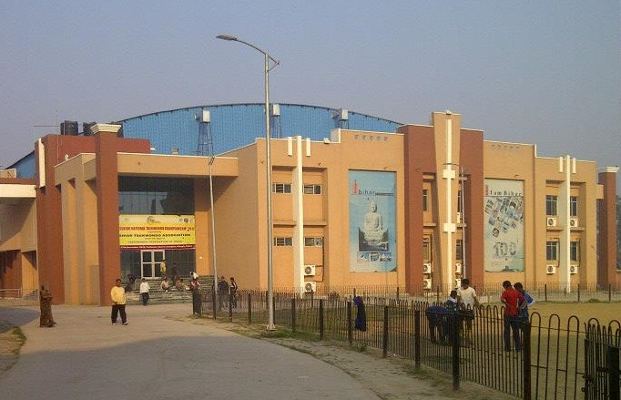
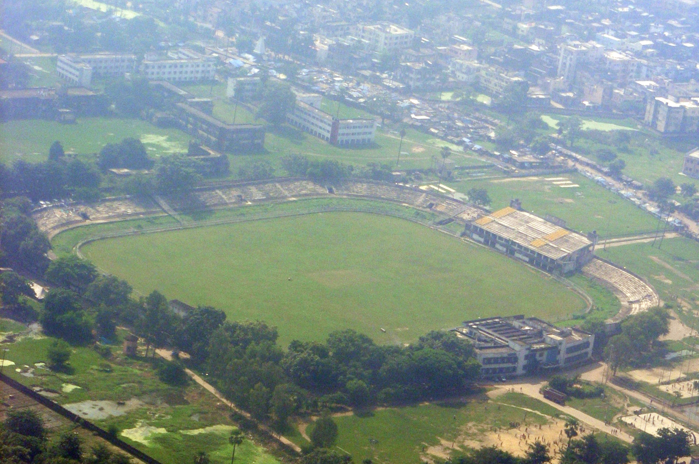

70th BPSC PYQShreyasi Singh question (verbatim theme): "Shreyasi Singh, MLA, who has represented India in shooting in Paris Olympics 2024 was elected from which constituency in Bihar?" — answer: Jamui. Trap option: Gidhaur (her home village in Jamui district). BPSC loves the athlete-politician: she is now Bihar's Sports & IT Minister (Nov 2025 cabinet).
70th BPSC PYQGames-host one-liners: "Which country is going to host the 20th Asian Games in 2026?" — answer: Japan (Aichi–Nagoya); "Which country hosted the 2022 Winter Olympics?" — answer: China. Same template now applies to: KIYG 2025 → Bihar, National Games 2025 → Uttarakhand, National Games 2027 → Meghalaya, Hockey Asia Cup 2025 → Rajgir.
69th BPSC PYQVenue ↔ trophy matching: Flushing Meadows ↔ US Open (tennis), Venus Rosewater Dish ↔ Wimbledon women's singles. Keep a mascot/symbol bank ready — BPSC can mirror this with Gajasimha ↔ KIYG 2025 (Bihar) and Mauli ↔ National Games 2025 (Uttarakhand).
💡 Deep-dive ready: Khelo India scheme statics, all 7 KIYG editions, National Games history 1924→2027, Bihar's big-event chronology, and the mascot bank:
Khelo India & National Games Detail →
A. Khelo India Youth Games 2025 (7th) — Bihar's Coming-Out Party MOST LIKELY
Bihar hosted the Khelo India Youth Games for the first time — the single biggest sporting event ever staged in the state. Learn the numbers cold; every row below is a potential one-liner.
🧠 Mnemonic — 5 KIYG cities "P-R-G-B-B": Patna → Rajgir → Gaya → Bhagalpur → Begusarai ("Patna-Rajgir-Gaya, Bhagalpur-Begusarai"). And remember the 6th "shadow venue": New Delhi (shooting/gymnastics/track cycling) — the standard NOT-true trap.

Patliputra Sports Complex, Patna — venue of the KIYG 2025 opening ceremony (4 May 2025). Image: Wikimedia Commons, CC BY-SA 4.0.
B. Hockey in Rajgir — Men's Asia Cup 2025 + Women's ACT 2024 HOT
Men's Hockey Asia Cup 2025 (12th edition), Rajgir — 29 Aug to 7 Sep 2025: India beat Korea 4-1 in the final (7 Sep 2025) to win its 4th Asia Cup title; Malaysia finished 3rd; Pakistan withdrew; the win qualified India for the FIH World Cup 2026.
Rajgir Sports Academy received Asian Hockey Federation affiliation during the event (announced with FIH President Tayyab Ikram) — institutionalising Rajgir as India's new hockey hub.
Women's Asian Champions Trophy 2024 (Nov 2024): India won the title in Rajgir — Bihar hosted back-to-back international hockey across 2024-25.
C. Sepak Takraw World Cup 2025 — Patna's First World Cup VERIFIED
5th ISTAF Sepak Takraw World Cup, 20–25 Mar 2025, Patliputra Indoor Stadium, Patna — 21 nations took part.
India's men's regu team won its first-ever World Cup GOLD, beating Japan 2-1; India ended with 7 medals, 4th in the tally; the win was praised by PM Modi.
Why it matters for BPSC: sepak takraw then debuted at KIYG 2025 — the Patna World Cup + KIYG debut is a classic "sequence" question.
D. National Games 2025 (38th, Uttarakhand) — Bihar's Lawn Bowls Gold PYQ THEME
38th National Games, 28 Jan – 14 Feb 2025, Uttarakhand: opened by PM Modi (Rajiv Gandhi Intl Stadium, Dehradun), closed at Haldwani; mascot Mauli (Himalayan monal); torch Tejaswini; theme Green Games (e-waste medals).
Tally:Services (SSCB) topped with 121 medals (68 gold) — won the Raja Bhalindra Singh Trophy for the 5th time; Maharashtra 2nd; Haryana 3rd (153 medals, 48 gold).
Bihar's moment (8 Feb 2025): GOLD in women's lawn bowls triples — Khushboo Kumari, Nikhat Khatoon and Payal Preeti beat West Bengal 15-14 — Bihar's first National Games gold in 25 years. (Bihar's overall tally figures conflict across sources — learn the gold, not the total.)
39th National Games 2027: to be hosted by Meghalaya (first time; host agreement signed 30 May 2026).
E. Vaibhav Sooryavanshi — The 15-Year-Old Phenomenon BANKABLE
Who: born 27 Mar 2011 at Tajpur village, Samastipur district, Bihar — left-handed opener.
Youngest-ever IPL signing:₹1.1 crore by Rajasthan Royals at age 13.
Youngest IPL debutant:19 Apr 2025, aged 14 years 23 days.
Youngest T20 centurion:101 off 38 balls v Gujarat Titans, 28 Apr 2025 — a 35-ball hundred, 2nd-fastest in IPL history.
IPL 2026 sweep:MVP + Orange Cap + Emerging Player (+ Super Striker, Most Sixes — 72) with 776 runs at SR 237.30, aged 15 — first-ever MVP + Emerging double. RCB won the title (back-to-back).
ICC U19 World Cup 2026 (6 Feb 2026, Harare):175 off 80 balls in the final v England (15 fours + 15 sixes — highest score in a U19 WC final); Player of the Tournament (439 runs @ 62.71); India won a record 6th U19 title.
Bihar government reward:₹50 lakh announced for him (Feb 2026).
F. Cricket Structure — Ranji Plate → Elite Promotion NEW
Ranji Trophy 2025-26: Bihar won the Plate group, crushing Manipur by 568 runs in the Plate final (reported 27 Jan 2026) → promoted to the Elite group for 2026-27.
Domestic trophy bank (static): Ranji Trophy (first-class, since 1934-35), Duleep Trophy (zonal FC), Irani Cup (Ranji champion v Rest of India), Vijay Hazare Trophy (List A), Syed Mushtaq Ali Trophy (T20).
G. Stadiums & Sports Infrastructure CROSS-LINK #20
Rajgir International Cricket Stadium (~Oct 2025):45,000 seats — Bihar's first world-class international cricket stadium, inside the ~90-acre Rajgir sports hub that also hosts the hockey academy.
Punpun stadium project:₹574.33 crore allocated in the Bihar Budget 2025-26 for a 100-acre international stadium in Punpun block (Patna district).
Patliputra Sports Complex, Patna: KIYG 2025 opening-ceremony venue; the adjacent Patliputra Indoor Stadium hosted the Sepak Takraw World Cup 2025.
Moin-ul-Haq Stadium, Patna: Bihar's historic cricket ground — hosted 1996 Cricket World Cup ODIs (Kenya v Zimbabwe); originally Rajendra Nagar Stadium, renamed in 1970 after Moin-ul-Haq, IOA general secretary and India's Olympic chef-de-mission (1948 London, 1952 Helsinki). BCA took a long-term lease (Mar 2024) and began reconstruction (Sep 2024).
H. Shreyasi Singh — Olympian → MLA → Sports Minister 70th PYQ ANCHOR
Shooting record: from Gidhaur, Jamui district; CWG 2018 GOLD (women's double trap, Gold Coast), CWG 2014 silver (Glasgow); Arjuna Award; competed at Paris 2024 Olympics (trap) — Bihar's first shooter at the Olympics and the first sitting MLA to compete at an Olympics.
Politics: BJP MLA from Jamui (2020, re-elected 2025); in Nov 2025 sworn in as minister in the Nitish Kumar cabinet and given Sports + Information Technology portfolios — an Olympian now running Bihar's sports department.
📊 Bihar's 2024-26 Sports Ladder at a Glance
Twelve months that turned Bihar into a host state — memorise the rungs in order.
Nov 2024 — India wins Women's Asian Champions Trophy, Rajgir
Mar 2025 — Sepak Takraw World Cup, Patna (India men's regu first GOLD)
4–15 May 2025 — 7th Khelo India Youth Games hosted by BIHAR (mascot Gajasimha)
29 Aug–7 Sep 2025 — India wins Men's Hockey Asia Cup 4-1 v Korea, Rajgir
~Oct 2025 — 45,000-seat Rajgir International Cricket Stadium inaugurated
Jan 2026 — Bihar wins Ranji Plate final (568 runs v Manipur) → Elite promotion
📋 Fact Matrix — Item | Value | As-Of
Item
Value
As-Of Date
KIYG 2025 (7th) host
Bihar (first time) — 5 cities + New Delhi events
4–15 May 2025
KIYG 2025 mascot
Gajasimha (Pala-era/Nalanda elephant-lion motif)
Unveiled pre-Games 2025
KIYG 2025 topper
Maharashtra — 158 medals (58G), 3rd straight title
May 2025
Bihar at KIYG 2025
15th — 36 medals (7G-11S-18B), best-ever
May 2025
Khushi Yadav (Bihar)
Girls' 2000m steeplechase gold, 9:52.10
KIYG, May 2025
Men's Hockey Asia Cup 2025
India champion (4-1 v Korea), Rajgir — 4th title
7 Sep 2025
Women's ACT 2024
India champion, Rajgir
Nov 2024
Sepak Takraw World Cup 2025
Patliputra Indoor Stadium, Patna; India men's regu first GOLD (2-1 v Japan); India 7 medals, 4th
MLA Jamui; Paris 2024 shooter; CWG 2018 gold; Bihar Sports + IT Minister
Minister since Nov 2025
🔶 Bihar Connection
🏛️ Why This Whole Page IS the Bihar Connection
Host-state year: in 2025 Bihar staged its first Khelo India Youth Games (5 cities), its first Sepak Takraw World Cup (Patna) and the Men's Hockey Asia Cup (Rajgir) — a hat-trick of firsts within seven months, after hosting the Women's Asian Champions Trophy in Nov 2024.
Olympic-administration legacy:Moin-ul-Haq of Bihar was general secretary of the Indian Olympic Association and India's chef-de-mission at the 1948 London and 1952 Helsinki Olympics; Patna's stadium (renamed from Rajendra Nagar Stadium in 1970) honours him and hosted 1996 World Cup ODIs.
Home-grown icons 2025-26:Vaibhav Sooryavanshi (Samastipur) — youngest IPL debutant/centurion, U19 WC 2026 hero; Khushi Yadav (steeplechase gold, KIYG); the women's lawn bowls triples team (Bihar's first National Games gold in 25 years).
The Dhoni trap (static): M.S. Dhoni was born in Ranchi on 7 July 1981 — Ranchi was then in Bihar; Jharkhand was carved out only on 15 Nov 2000 (Bihar Reorganisation Act, 2000). BPSC can twist "which state" questions this way.
Athlete-politician:Shreyasi Singh — CWG 2018 gold medallist, Paris 2024 Olympian, MLA from Jamui (70th BPSC question), and since Nov 2025 Bihar's Sports Minister — the state literally put an Olympian in charge of sports.

Moin-ul-Haq Stadium, Patna — hosted 1996 Cricket World Cup ODIs (Kenya v Zimbabwe); named after the IOA general secretary from Bihar. Image: Wikimedia Commons, public domain.
🔗 Cross-Topic Connections
↔ Topic #10 (Sports — National CA): The same events appear in national framing there — KIYG 2025 tally, National Games 2025 (Services' Raja Bhalindra Singh Trophy), Asia Cup hockey, Sooryavanshi's IPL/U19 records, T20 WC 2026. Revise both pages together. ↔ Topic #16 (Bihar State Budget): the ₹574.33 crore Punpun international-stadium allocation is a Budget 2025-26 figure — expect it in budget-highlight questions too. ↔ Topic #17 (Appointments in Bihar):Shreyasi Singh entering the cabinet (Nov 2025) as Sports + IT Minister is an appointment fact as much as a sports fact. ↔ Topic #20 (Infra & Projects): Rajgir's 45,000-seat international cricket stadium (~Oct 2025), the ~90-acre Rajgir sports hub and the Punpun stadium site belong on the infrastructure map. ↔ Topic #62 (Sports Static): trophy bank — Ranji/Duleep/Irani/Vijay Hazare/Syed Mushtaq Ali (cricket), Raja Bhalindra Singh Trophy (National Games), Durand Cup (1888) and Santosh Trophy (football), Venus Rosewater Dish (Wimbledon — 69th BPSC). ↔ Topic #18 (Bihar Awards & Honours): state rewards to sportspersons — the ₹50 lakh announced for Sooryavanshi (Feb 2026) — and Arjuna awardees from Bihar (Shreyasi Singh).
📰 Current Relevance & Potential Traps (2025–26 Cycle)
Near-certain one-liner: "Which state hosted the 7th Khelo India Youth Games (2025)?" → Bihar (4–15 May 2025, first time). Mascot Gajasimha; opened virtually by PM Modi at Patliputra Sports Complex.
Trap — "all events in Bihar": FALSE. Shooting, gymnastics and track cycling were held in New Delhi. Bihar had 5 cities: Patna, Rajgir, Gaya, Bhagalpur, Begusarai.
Trap — mascot swap:Gajasimha = KIYG 2025 (Bihar); Mauli (Himalayan monal) = National Games 2025 (Uttarakhand); Tejaswini = NG 2025 torch; Veera Mangai = KIYG 2024 (Tamil Nadu). Do not interchange.
Trap — Bihar's KIYG numbers: rank 15th (up from 28th), 36 medals = 7G-11S-18B. Distractors will swap 15↔28 or quote Maharashtra's 158/58 for Bihar.
Hockey double: Women's Asian Champions Trophy (Nov 2024) and Men's Asia Cup (29 Aug–7 Sep 2025, India 4-1 Korea) — both at Rajgir. Pakistan withdrew from the men's event; India qualified for the FIH World Cup 2026.
Sepak takraw sequence: World Cup at Patna (Mar 2025, India men's regu first gold, 2-1 v Japan) → KIYG debut (May 2025). Order matters in statement questions.
Sooryavanshi numbers to memorise: born 27 Mar 2011, Tajpur, Samastipur; ₹1.1 cr RR signing (age 13); debut 19 Apr 2025 (14y 23d); 101 off 38 v GT (28 Apr 2025); U19 final 175 off 80 (6 Feb 2026, Harare, India's 6th title); IPL 2026 776 runs, SR 237.30, MVP + Orange Cap + Emerging; ₹50 lakh state reward (Feb 2026).
Numbers left deliberately out (source conflicts): Haryana's KIYG 2025 total (117 vs 107) and Bihar's National Games 2025 total tally (18 vs 12) — learn the golds (Haryana 39G; Bihar's lawn-bowls gold), not the disputed totals.
Fresh 2026 hooks: Ranji Plate → Elite promotion (568-run win v Manipur, Jan 2026); Rajgir 45,000-seat stadium (~Oct 2025); Punpun ₹574.33 cr (Budget 2025-26); Shreyasi Singh as Sports Minister (Nov 2025) — all "what happened recently in Bihar sports" bait.
✍️ MCQ Practice Set — 25 Questions (BPSC Level)
Q1. Shreyasi Singh, Member of the Legislative Assembly, who represented India in shooting at the Paris Olympics 2024, was elected from which constituency in Bihar? (70th BPSC PYQ)
✅ Correct Answer: (C) — Shreyasi Singh (CWG 2018 double-trap gold medallist) was elected BJP MLA from Jamui in 2020 and re-elected in 2025. (A) is the trap: Gidhaur is her ancestral village in Jamui district, not her constituency. In Nov 2025 she became Bihar's Sports + IT Minister.
Q2. The mascot of the Khelo India Youth Games 2025, hosted by Bihar, was:
✅ Correct Answer: (C) — Gajasimha, the elephant-lion figure from the Pala-era/Nalanda motif, was unveiled by CM Nitish Kumar and Union Minister Mandaviya. Traps: Mauli = National Games 2025 mascot (Himalayan monal); Tejaswini = NG 2025 torch; Veera Mangai = KIYG 2024 (Tamil Nadu) mascot.
Q3. The 7th Khelo India Youth Games in Bihar were held during:
✅ Correct Answer: (A) — KIYG 2025 ran 4–15 May 2025, opened virtually by PM Modi at Patliputra Sports Complex. The distractors are the sibling events: (B) = National Games 2025 (Uttarakhand), (C) = Men's Hockey Asia Cup (Rajgir), (D) = Sepak Takraw World Cup (Patna).
Q4. Which of the following cities was NOT a venue of the Khelo India Youth Games 2025?
✅ Correct Answer: (D) — The five Bihar venues were Patna, Rajgir, Gaya, Bhagalpur and Begusarai; New Delhi hosted shooting, gymnastics and track cycling. Muzaffarpur hosted nothing. Mnemonic: P-R-G-B-B.
Q5. Which state topped the medal tally at the Khelo India Youth Games 2025?
✅ Correct Answer: (D) — Maharashtra won with 158 medals (58 gold), a third consecutive KIYG title. Haryana was second and Rajasthan third (its best-ever, 24 gold). Host Bihar finished 15th.
Q6. At KIYG 2025, host Bihar finished:
✅ Correct Answer: (C) — Bihar rose from 28th to 15th with 36 medals (7G-11S-18B), its best-ever KIYG performance, roughly doubling its all-time tally. Traps: 28th was the previous rank; 7 is the edition number; 58 was Maharashtra's gold count.
Q7. Consider the following statements about KIYG 2025:
1. It was the first Khelo India Youth Games hosted by Bihar.
2. Sepak takraw made its KIYG debut at these Games.
3. All events were held within the state of Bihar.
Which of the statements given above are correct?
✅ Correct Answer: (B) — Statements 1 and 2 are correct. Statement 3 is false: New Delhi hosted the shooting, gymnastics and track-cycling events; Bihar had five cities (Patna, Rajgir, Gaya, Bhagalpur, Begusarai). The "all events within the host state" line is BPSC's favourite absolute-word trap.
Q8. In the Men's Hockey Asia Cup 2025 final at Rajgir, India defeated which team 4-1 to win its 4th title?
✅ Correct Answer: (C) — India beat Korea 4-1 on 7 Sep 2025 in Rajgir for its 4th Asia Cup crown, qualifying for the FIH World Cup 2026. Traps: Malaysia finished third; Pakistan withdrew from the tournament, so it could not have played the final.
Q9. The Women's Asian Champions Trophy 2024, which India won, was hosted at:
✅ Correct Answer: (C) — Rajgir (Bihar) hosted the women's ACT in November 2024, a year before the men's Asia Cup came to the same city — establishing Rajgir as India's newest international hockey hub (its academy received Asian Hockey Federation affiliation in 2025).
Q10. At the Sepak Takraw World Cup 2025 held in Patna, India's men's regu team won its first-ever World Cup gold by defeating:
✅ Correct Answer: (D) — India beat Japan 2-1 in the final at Patliputra Indoor Stadium (20–25 Mar 2025, 21 nations); India won 7 medals to finish 4th. (A) Thailand is the global sepak takraw powerhouse and the natural-but-wrong guess.
Q11. Bihar's first National Games gold medal in 25 years (38th National Games, 2025) came in which event?
✅ Correct Answer: (A) — Khushboo Kumari, Nikhat Khatoon and Payal Preeti edged West Bengal 15-14 in the women's lawn bowls triples final on 8 Feb 2025 — Bihar's first National Games gold in 25 years.
Q12. The 38th National Games of 2025 were hosted by: (70th BPSC host-state pattern)
✅ Correct Answer: (C) — Uttarakhand hosted the 38th Games (28 Jan–14 Feb 2025; mascot Mauli; "Green Games" theme). Sequence to memorise: Gujarat 2022 (36th) → Goa 2023 (37th) → Uttarakhand 2025 (38th) → Meghalaya 2027 (39th) — Meghalaya is the forward-looking trap.
Q13. The 39th National Games, scheduled for 2027, will be hosted for the first time by:
✅ Correct Answer: (A) — Meghalaya hosts the 2027 National Games (first time); the flag was handed over at the 2025 closing ceremony and the host agreement was signed on 30 May 2026.
Q14. The Raja Bhalindra Singh Trophy is awarded to: (69th BPSC trophy-matching pattern)
✅ Correct Answer: (B) — The Raja Bhalindra Singh Trophy goes to the overall champion (most golds) of the National Games; Services (SSCB) won it in 2025 for the 5th time with 121 medals (68 gold). KIYG has no such named trophy.
Q15. Vaibhav Sooryavanshi, the teenage batting sensation, hails from which district of Bihar? (70th BPSC district-of-athlete pattern)
✅ Correct Answer: (C) — He was born on 27 March 2011 in Tajpur village, Samastipur district. The pattern mirrors the 70th BPSC's Shreyasi Singh (Jamui) question — learn Bihar athletes with their districts.
Q16. Vaibhav Sooryavanshi became the youngest-ever IPL debutant on 19 April 2025, aged:
✅ Correct Answer: (A) — Born 27 Mar 2011, he debuted for Rajasthan Royals on 19 Apr 2025 at 14 years 23 days. He had earlier become the youngest IPL signing ever — ₹1.1 crore at age 13.
Q17. Sooryavanshi became the youngest centurion in T20 cricket with a 101 off 38 balls (28 April 2025) against which IPL team?
✅ Correct Answer: (D) — The 101 off 38 came against Gujarat Titans; the 35-ball hundred is the second-fastest in IPL history. (C) is the 2026 trap — RCB won the IPL 2026 title while Sooryavanshi swept the individual awards for RR.
Q18. In the ICC U19 World Cup 2026 final (Harare, 6 Feb 2026), Vaibhav Sooryavanshi scored:
✅ Correct Answer: (A) — His 175 off 80 (15 fours, 15 sixes) v England is the highest score in a U19 WC final; he was Player of the Tournament with 439 runs as India won a record 6th title. Traps: 101 off 38 was his IPL knock (v GT); 439 is the tournament aggregate, not one innings.
Q19. In IPL 2026, Vaibhav Sooryavanshi (Rajasthan Royals) achieved which sweep?
✅ Correct Answer: (A) — At 15 he became the first player to win MVP + Orange Cap + Emerging Player together (776 runs, SR 237.30, 72 sixes — also Super Striker and Most Sixes). Purple Cap went to Kagiso Rabada; RCB won the title (back-to-back).
Q20. Bihar earned promotion to the Ranji Trophy Elite group for 2026-27 by:
✅ Correct Answer: (A) — Bihar were crowned Plate group champions after a 568-run demolition of Manipur in the final (reported 27 Jan 2026), earning Elite-group status for 2026-27. Ranji Trophy (since 1934-35) is India's premier first-class championship.
Q21. The international cricket stadium inaugurated at Rajgir (~October 2025) — Bihar's first world-class cricket venue — has a seating capacity of about:
✅ Correct Answer: (D) — 45,000 seats, within the ~90-acre Rajgir sports hub. Traps: 25,000 ≈ Moin-ul-Haq Stadium's capacity; 86,000+ was the T20 WC 2026 final crowd in Ahmedabad; don't confuse with the 100-acre Punpun stadium site (an area figure, not capacity).
Q22. The Bihar Budget 2025-26 allocated which sum for a 100-acre international stadium at Punpun block (Patna)?
✅ Correct Answer: (B) — ₹574.33 crore was earmarked in Budget 2025-26 for the 100-acre Punpun international stadium (cross-link Topic #16). BPSC loves digit-swapped distractors — anchor the "574".
Q23. Moin-ul-Haq Stadium in Patna is historically significant because it:
✅ Correct Answer: (A) — It staged the Kenya v Zimbabwe matches of the 1996 World Cup. Originally Rajendra Nagar Stadium, it was renamed in 1970 after Moin-ul-Haq, IOA general secretary and India's Olympic chef-de-mission (1948, 1952). The 2011 final was at Wankhede; Bihar's first CM was Shri Krishna Sinha.
Q24. M.S. Dhoni was born in Ranchi on 7 July 1981. At the time of his birth, Ranchi lay in which state?
✅ Correct Answer: (C) — Jharkhand was carved out of Bihar only on 15 November 2000 (Bihar Reorganisation Act, 2000); in 1981 Ranchi was in Bihar. (A) is the obvious-but-wrong present-day answer — a classic BPSC time-frame trap.
Q25. Match List-I (Mascot/Symbol) with List-II (Event):
a) Gajasimha — 1) 38th National Games 2025 (Uttarakhand)
b) Mauli — 2) Khelo India Youth Games 2025 (Bihar)
c) Milo & Tina — 3) Winter Olympics 2026 (Milano–Cortina)
✅ Correct Answer: (B) — Gajasimha = KIYG 2025 (Bihar); Mauli (Himalayan monal) = National Games 2025; Milo & Tina = Milano–Cortina Winter Olympics (6–22 Feb 2026). The Gajasimha↔Mauli swap is the exact trap BPSC will plant.
Your Score
0/25
🔗 Reference Links
2025 Khelo India Youth Games (Wikipedia)— 7th KIYG, Bihar, 4–15 May 2025: venues, Gajasimha mascot, 28 sports + esports, sepak takraw debut, full medal tally (Maharashtra 158/58G; Bihar 15th, 36 medals).
FIH — Hero Asia Cup Rajgir 2025— India 4-1 Korea in the final (7 Sep 2025), 4th title; Rajgir Sports Academy's Asian Hockey Federation affiliation.
News24 — Shreyasi Singh, Cabinet Minister (Nov 2025)— Jamui MLA (re-elected 2025), sworn into Nitish Kumar cabinet 20 Nov 2025; Sports + IT portfolios; CWG 2018 gold, Paris 2024 Olympian (re-verified for this page).
Bihar Say — Moin-ul-Haq Stadium History & Reconstruction— Rajendra Nagar Stadium renamed 1970 after IOA general secretary Moin-ul-Haq; 1996 World Cup ODIs; BCA lease (Mar 2024) and rebuild (Sep 2024) (re-verified for this page).
Khelo India — Official Portal— Scheme revamped 2018; KIYG annual since 2018 (1st: Delhi); Winter Games, Para Games (1st: 2023), University Games.